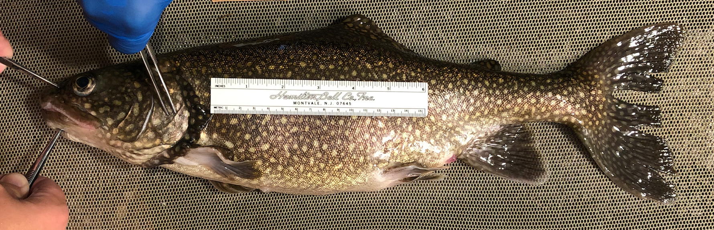

Lake Trout EpiGenomics Project
Comparative Analysis of Salvelinus namaycush Ecotypes
Interactive Genome Browsers
Explore the genomic data through two interactive visualization platforms, each offering unique capabilities for data exploration.
🔬 IGV.js Browser
Best for Quick Exploration
Featured Tracks:
- Gene annotations
- PAV insertions & deletions (Lean/Siscowet)
- CpG methylation (8 samples)
- Differentially methylated regions
🧬 JBrowse 2
Best for Advanced Analysis
Featured Tracks:
- Gene annotations (BED format)
- PAV structural variants
- CpG methylation BigWig tracks
- Differential methylation results
About Lake Trout (Salvelinus namaycush)
Lake trout (Salvelinus namaycush) are a cold-water char native to North American lakes. They are the largest member of the char genus Salvelinus and represent an important species for understanding evolutionary adaptation and ecological divergence.
This project focuses on comparing two distinct ecotypes found in the Great Lakes:
- Lean Lake Trout: Shallow-water dwelling, elongated body morphology, lower lipid content
- Siscowet Lake Trout: Deep-water specialist, robust body form, high lipid storage capacity
These ecotypes exhibit remarkable phenotypic differences despite living in the same lake system, making them an excellent model for studying the genomic basis of ecological adaptation.

Data & Methods
Reference Genome
- Assembly: NCBI GCF_016432855.1 (SaNama_1.0)
- Source: NCBI BioProject PRJNA674328
Samples
| Ecotype | Sample Size | Description |
|---|---|---|
| Lean | n=4 | Shallow-water ecotype |
| Siscowet | n=4 | Deep-water ecotype |
Analysis Pipeline
- PAV Calling: PacBio long-read sequencing with pbsv
- Methylation Analysis: PacBio CpG methylation calling and DMR identification
Citation & Resources
- GitHub Repository: RobertsLab/project-lake-trout